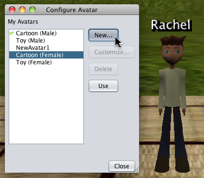
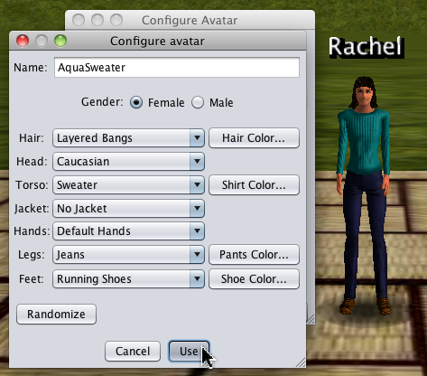

Navigation
Use the arrow keys on your keyboard to move your avatar forward, backward, right and left. The mouse scroll wheel zooms your camera in and out. For more navigation help, select "Navigation Reference" from the Help menu.
Use the arrow keys on your keyboard to move your avatar forward, backward, right and left. The mouse scroll wheel zooms your camera in and out. For more navigation help, select "Navigation Reference" from the Help menu.
The navigation help window is interactive so that you may click on the controls in the window to move your avatar.
 Avatars
AvatarsBy default, you are given a "cartoon" avatar. To change your avatar, select "Configure Avatar" from the Edit menu.

To change to a different cartoon avatar, select the avatar name and click "Use." To create an avatar that can walk and gesture, click on "New..."
The "Configure Avatar" window will open, allowing you to select your avatar's gender and various other hair and clothing options.

Click "Use" for others to see your new avatar.